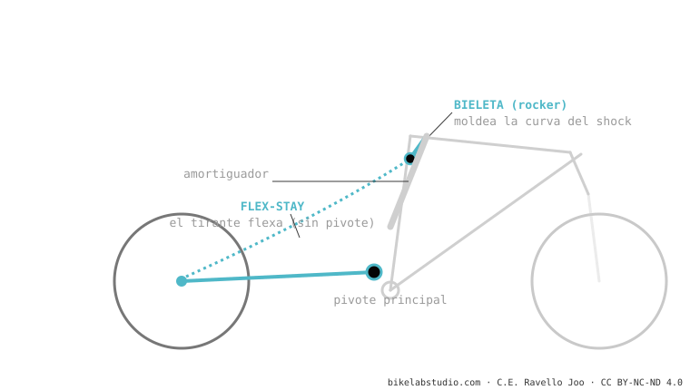

Es un monopivote con dos trucos: el amortiguador se mueve con una bieleta (para moldear la curva) y el pivote trasero se reemplaza por la flexión del carbono (flex-stay), ahorrando peso y rodamientos. Es el sistema dominante en XC y down-country (Scott Spark, Specialized Epic 8, Cannondale Scalpel, Orbea Oiz). Ojo: cinemáticamente la rueda sigue trazando un arco de monopivote, no es un 4 barras real.
Si tu XC pesa poquísimo y "no tiene pivote atrás", es esto. Y las marcas lo venden como "cuatro barras", pero no lo es — y aquí te explicamos por qué importa.
Una regla de plástico se dobla y vuelve sola. ¿Y si ese "doblarse" controlado reemplazara a un pivote con rodamientos? Eso es el flex-stay.

No: sin pivote real cerca del eje, la rueda sigue un arco de monopivote. Las marcas lo llaman "4 barras" pero cinemáticamente no lo es.
Quita rodamientos: ahorra ~150-200 g y mantenimiento. Para recorridos cortos, la flexión del carbono basta.
Dinos el modelo y te decimos su comportamiento y setup ideal. Escríbenos por WhatsApp
© 2026 BikeLab Studio. Contenido bajo CC BY 4.0: puedes copiarlo, traducirlo y publicarlo, incluso con fines comerciales. La cita es obligatoria. Sin atribución, la licencia se revoca de forma automática (CC BY 4.0, §6.a) y el uso pasa a ser una infracción de derechos de autor: solicitamos la retirada del contenido y su desindexación. · Diseño y propiedad: Carlos Ravello Joo